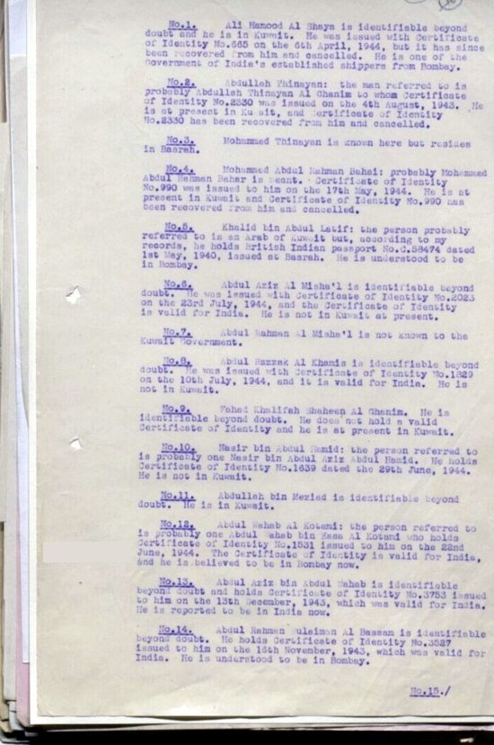

1944 · Typed page from British correspondence
British list of Kuwaitis holding papers for India, naming Abdulwahab bin Eissa Al-Qatami
What it is
Item 12 reads: «Abdul Wahab Al Kotami: the person referred to is probably one Abdul Wahab bin Essa Al Kotami who holds Certificate of Identity No.1531 issued to him on the 22nd June, 1944. The Certificate of Identity is valid for India, and he is believed to be in Bombay now.»
Why it matters
It places Abdulwahab Eissa in Bombay in 1944, during the years he traded between Kuwait and India.
Who is meant
Abdulwahab bin Eissa Al-Qatami, the nakhuda (1898 to 1967).
Page copies

Original text
No.12. Abdul Wahab Al Kotami: the person referred to is probably one Abdul Wahab bin Essa Al Kotami who holds Certificate of Identity No.1531 issued to him on the 22nd June, 1944. The Certificate of Identity is valid for India, and he is believed to be in Bombay now.
English translation
رقم ١٢. عبدالوهاب القطامي: الشخص المقصود هو على الأرجح عبدالوهاب بن عيسى القطامي الذي يحمل شهادة هوية رقم ١٥٣١ صدرت له في ٢٢ يونيو ١٩٤٤. والشهادة صالحة للهند، ويُعتقد أنه في بومباي الآن.
Notes
The British writer says «probably». The page is a reposted image; the full archive reference is still to be found.
Sources
Shared by Al-Wathaeq on Instagram, 10 June 2020.
How this text was made: Quoted from the scan.
Open in the interactive site